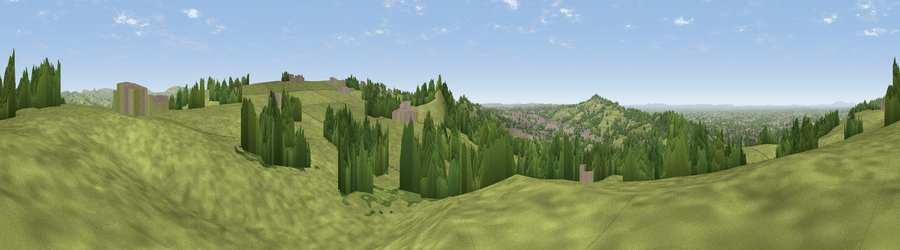

Viewpoint near Biddulph Moor
#12342 in England · top 14% of its area beats it · near Biddulph MoorThe view, rendered

A 360° render of this exact spot computed from the terrain model, tree cover and land cover — summer colours, afternoon light, calibrated against photographs of famous viewpoints. Real trees, hedges and buildings will differ in detail.
The panorama
Grey silhouette: terrain skyline in each direction (720 bearings, Earth curvature and refraction included). Dashed green: skyline with trees (+15 m) and buildings (+8 m) as obstacles. Blue strip: how far the ground is visible on each bearing.
Where the view opens
Wedge length = distance to the farthest visible ground on that bearing (vegetation-aware). Rings at 10, 25 and 50 km.
What fills the view
76% grassland · 19% woodland · 4% built-up · 1% cropland
Angular shares of the visible panorama (visual magnitude), not map area. Landscape diversity 0.31 (0–1 Shannon).
Key numbers
More beautiful places nearby
The staircase of upgrades: each row has a higher view potential than everything closer. Driving times are estimates from straight-line distance, calibrated against real road routing — check an actual route before setting out.
| Place | Direction | Drive | Score |
|---|---|---|---|
| Viewpoint near Biddulph Moor | S · 1 km | ~2 min | 64.2 |
| Viewpoint near Biddulph Moor | SE · 1 km | ~4 min | 66.2 |
| Viewpoint near Biddulph | W · 3 km | ~7 min | 68.0 |
| Viewpoint near Timbersbrook | N · 3 km | ~7 min | 69.1 |
| Viewpoint near Timbersbrook | N · 3 km | ~8 min | 74.4 |
| Viewpoint near Mow Cop | WSW · 5 km | ~11 min | 78.9 |
| Viewpoint near Mow Cop | WSW · 6 km | ~12 min | 80.2 |
| Viewpoint near Harthill | W · 40 km | ~59 min | 80.5 |
53.14044, -2.14310 · source: screening · position refined by local search. Computed location — check access rights before visiting.